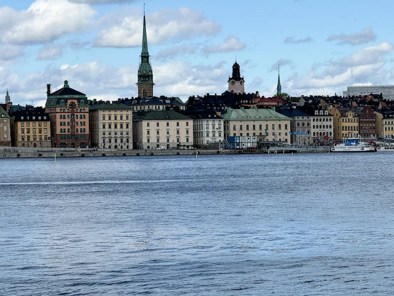
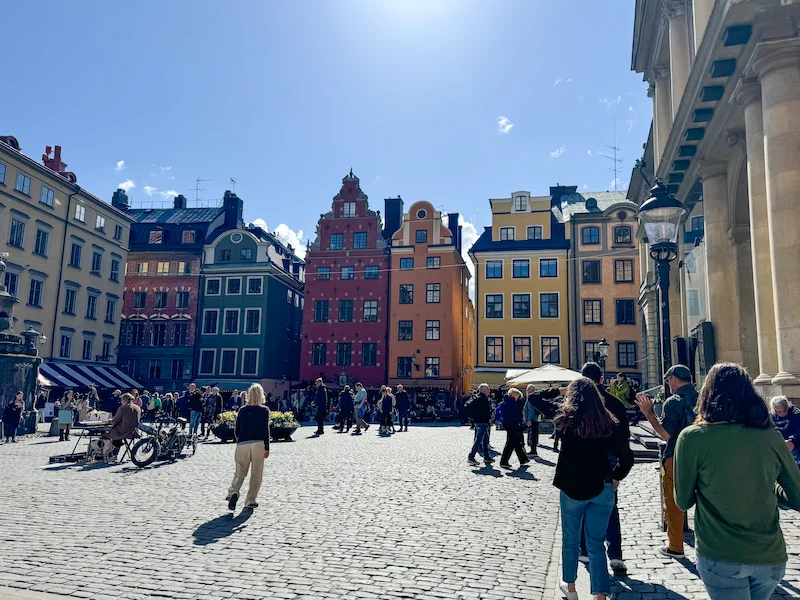
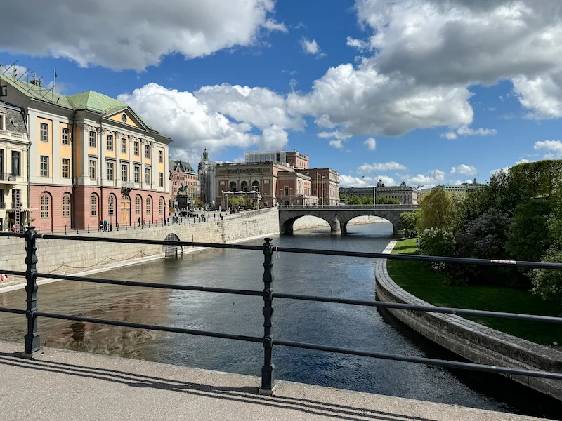
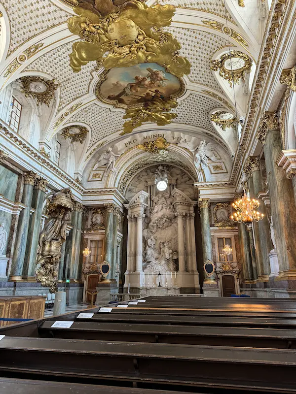
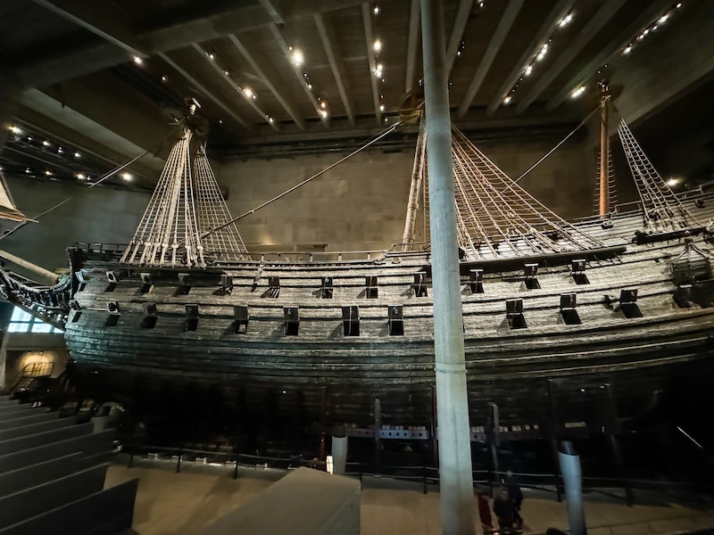
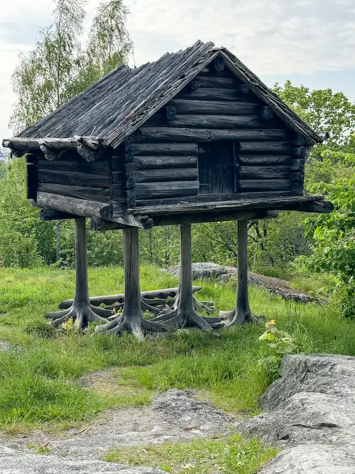

My favorite city is Stockholm. It is the capital of Sweden and is set on a beautiful archipelago where Lake Mälaren meets the Baltic Sea. This is the view you see when you approach it via ferry.
The historic Gamla Stan area is the oldest part of the city, with a palace to tour, shopping, and restaurants.
This is the palace as seen from the next island.
The chapel within the palace is extremely ornate.
The Vasa Museum holds a restored ship which sank in Sweden's cold waters in 1628, where it was preserved and later restored.
The open-air museum Skansen displays historic buildings, art, culture, and even animals.
